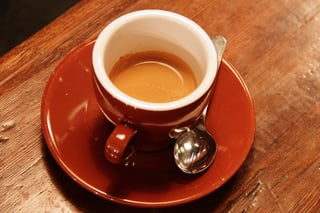
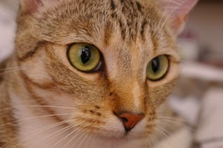
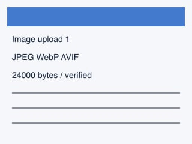
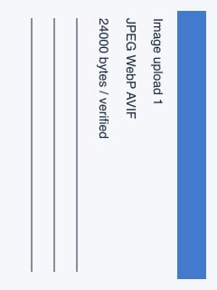
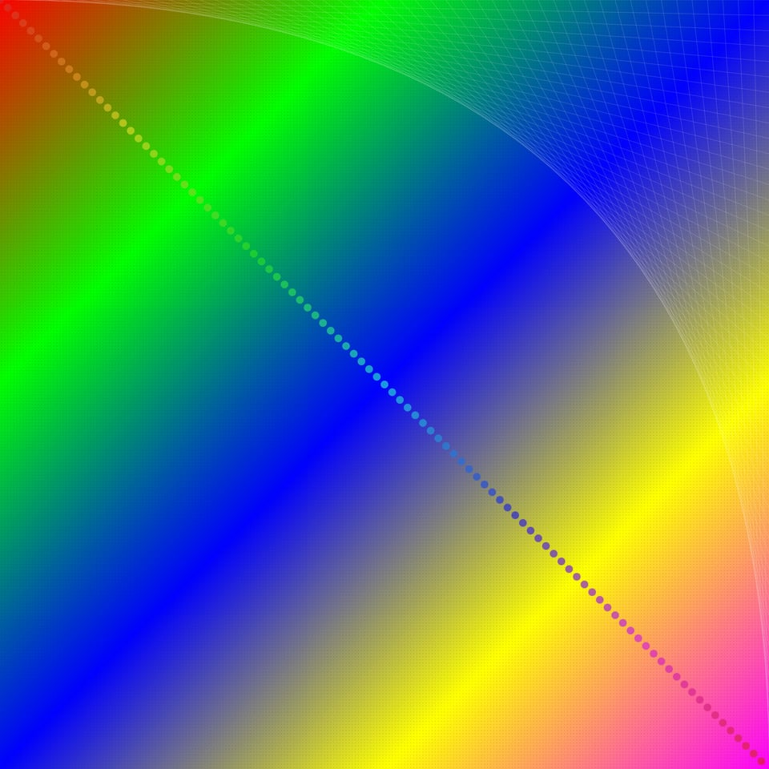

manifestで組み立てる静的な技術ブログ
画像を事前に処理し、ページは確定した成果物だけを参照します。URLとレスポンシブ画像の幅は実際のmanifestから取得しています。
写真、文字と細線、Orientation、大入力、小画像の違いを、同じページ内で確認します。これは既存素材による用途再現です。
コーヒー：CC0の写真
記事の内容を補う画像を、実manifestから配置します。出力幅：320px。

猫：異なるCC0の写真
記事の内容を補う画像を、実manifestから配置します。出力幅：320px。

文字と細線：プロジェクト生成の合成図
記事の内容を補う画像を、実manifestから配置します。出力幅：320px。

Orientation=6：metadata確認用の合成図
記事の内容を補う画像を、実manifestから配置します。出力幅：240px。

5000×5000：大入力の合成fixture
記事の内容を補う画像を、実manifestから配置します。出力幅：320 / 640 / 960px。

64px：coffeeからの派生画像（独立した写真ではありません）
記事の内容を補う画像を、実manifestから配置します。出力幅：64px。